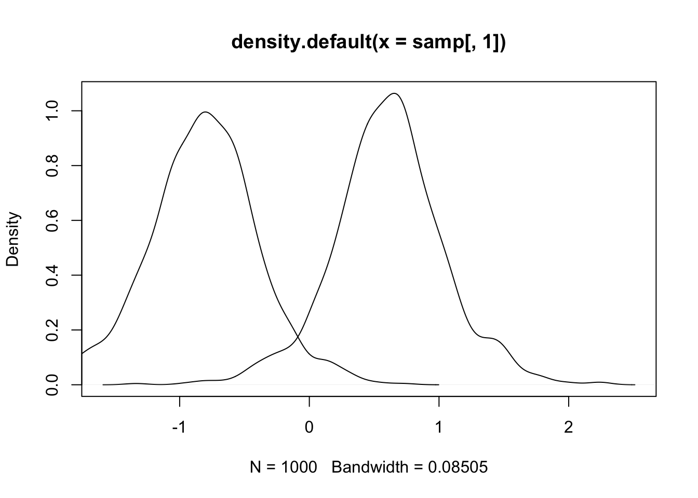
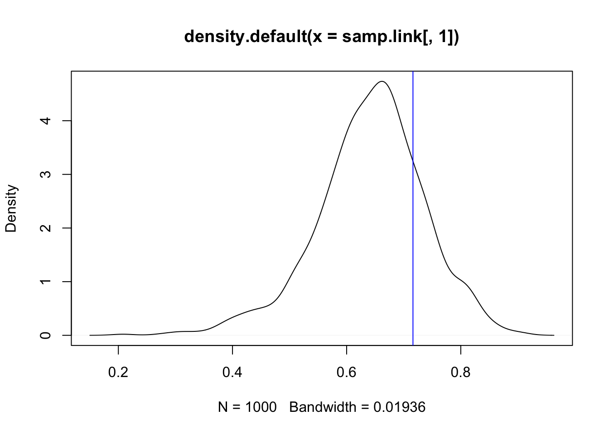
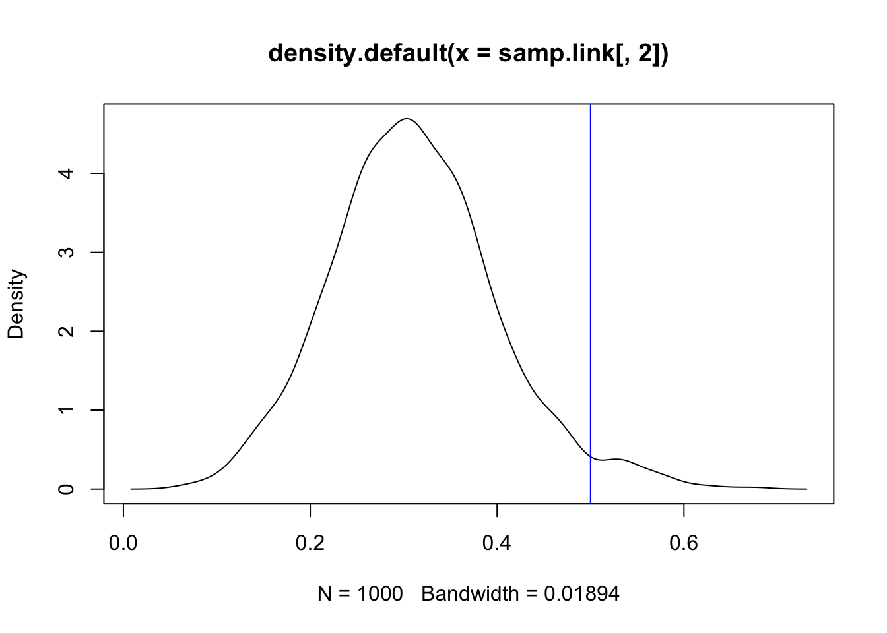

In this topic we discuss how to do multivariate predictions! I recommend reading btopic102 first, as this explains the data and the model. I recommend reading btopic112 first, as this explains the univariate predictions.
We load any packages and set global options. You may need to install these libraries (Installation and general troubleshooting).
library(INLA)
rm(list=ls())
options(width=70, digits=2)
set.seed(2017)data(Seeds)
df = data.frame(y = Seeds$r, Ntrials = Seeds$n, Seeds[, 3:5])If you want to predict to new locations, you do not have to do this step. Instead you define rows for the “locations” (covariates) where you want to hold out points.
holdout = c(7, 12)
# - alternatively: sort(sample(1:nrow(df), 2))
df.holdout = df
df.holdout$y[holdout] = NAThis entire example code is what you need to do in a for-loop for a complete L2OCV-LPD (Leave-2-Out Log Predictive Density). L2OCV-LPD is useful for model comparison.
family1 = "binomial"
control.family1 = list(control.link=list(model="logit"))
# number of trials is df$Ntrialshyper1 = list(theta = list(prior="pc.prec", param=c(1,0.01)))
formula1 = y ~ x1 + x2 + f(plate, model="iid", hyper=hyper1)res1 = inla(formula=formula1, data=df.holdout,
family=family1, Ntrials=Ntrials,
control.family=control.family1,
control.predictor=list(compute=T),
control.compute=list(config=T))summary(res1)##
## Call:
## c("inla.core(formula = formula, family = family, contrasts =
## contrasts, ", " data = data, quantiles = quantiles, E = E,
## offset = offset, ", " scale = scale, weights = weights,
## Ntrials = Ntrials, strata = strata, ", " lp.scale = lp.scale,
## link.covariates = link.covariates, verbose = verbose, ", "
## lincomb = lincomb, selection = selection, control.compute =
## control.compute, ", " control.predictor = control.predictor,
## control.family = control.family, ", " control.inla =
## control.inla, control.fixed = control.fixed, ", " control.mode
## = control.mode, control.expert = control.expert, ", "
## control.hazard = control.hazard, control.lincomb =
## control.lincomb, ", " control.update = control.update,
## control.lp.scale = control.lp.scale, ", " control.pardiso =
## control.pardiso, only.hyperparam = only.hyperparam, ", "
## inla.call = inla.call, inla.arg = inla.arg, num.threads =
## num.threads, ", " blas.num.threads = blas.num.threads, keep =
## keep, working.directory = working.directory, ", " silent =
## silent, inla.mode = inla.mode, safe = FALSE, debug = debug, ",
## " .parent.frame = .parent.frame)")
## Time used:
## Pre = 3.14, Running = 0.552, Post = 0.0527, Total = 3.74
## Fixed effects:
## mean sd 0.025quant 0.5quant 0.97quant mode kld
## (Intercept) -0.43 0.19 -0.80 -0.43 -0.061 -0.43 0
## x1 -0.40 0.25 -0.93 -0.39 0.055 -0.37 0
## x2 1.05 0.24 0.57 1.04 1.510 1.04 0
##
## Random effects:
## Name Model
## plate IID model
##
## Model hyperparameters:
## mean sd 0.025quant 0.5quant 0.97quant mode
## Precision for plate 20.60 41.25 2.70 9.96 86.55 5.59
##
## Marginal log-Likelihood: -62.59
## is computed
## Posterior summaries for the linear predictor and the fitted values are computed
## (Posterior marginals needs also 'control.compute=list(return.marginals.predictor=TRUE)')n.samples = 1000
samples = inla.posterior.sample(n.samples, result = res1)This function draws posterior samples from the linear predictor and all its components. The samples from the hyper-parameters are only samples from the integration grid (which represents the only hyper-parameter values to compute the posterior of all the latent variables).
We want to compute a prediction where we have several datapoints.
df[holdout, ]## y Ntrials x1 x2 plate
## 7 53 74 0 1 7
## 12 8 16 1 0 12## See one example value
samples[[1]]$latent[holdout, , drop=F]## [,1]
## Predictor:7 1.66
## Predictor:12 -0.83## Draw this part of every sample
samp = lapply(samples, function(x) x$latent[holdout])
samp = matrix(unlist(samp), ncol = 2, byrow = T)Plot a density of this sample. You could also do a histogram with
truehist.
plot(density(samp[, 1]))
lines(density(samp[, 2]))
We now need to transform through the link function and the data sampling. We know we use the logit transform, but we can doublecheck this:
res1$.args$control.family$control.link$model## NULLsamp.link = inla.link.invlogit(samp)You can set up the logit function yourself, or use
inla.link.invlogit(x). We transform the samples through the
link.
plot(density(samp.link[, 1]))
## Add the naive estimate of binomial probability y/N:
abline(v = df$y[holdout[1]]/df$Ntrials[holdout[1]], col="blue")
plot(density(samp.link[, 2]))
## Add the naive estimate of binomial probability y/N:
abline(v = df$y[holdout[2]]/df$Ntrials[holdout[2]], col="blue")
The following code is specific to discrete likelihoods, as we can compute all the densities exactly. What we do here is discrete integration, computing the probabilities exactly (on the samples that we have).
## What range of observations do we want to compute
true.values = df$y[holdout]
if (any(is.na(true.values))) stop("Put the true values here!")
probs = rep(0, length(holdout))
for (i in 1:nrow(samp.link)) {
probs = probs + dbinom(true.values, size=df$Ntrials[holdout], prob = samp.link[i, ])
}
## Numerical integration needs to divide by the number of samples
probs = probs / length(samples)
names(probs) = paste("holdout", holdout)
## Because of conditional independence, with the same sample, we can sum up the log probabilities
probs = c(probs, exp(sum(log(probs))))
names(probs)[length(probs)] = "Joint probability"
## The result for this hold-out combo
print(probs)## holdout 7 holdout 12 Joint probability
## 0.0428 0.0682 0.0029
7 Comments
One proper scoring rule is the log probability. It is common to multiply the log probability by -2.